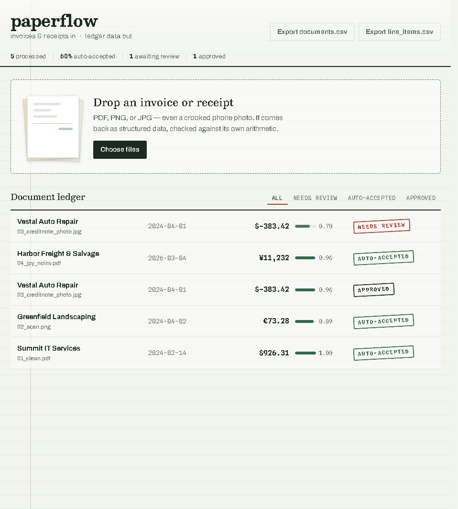
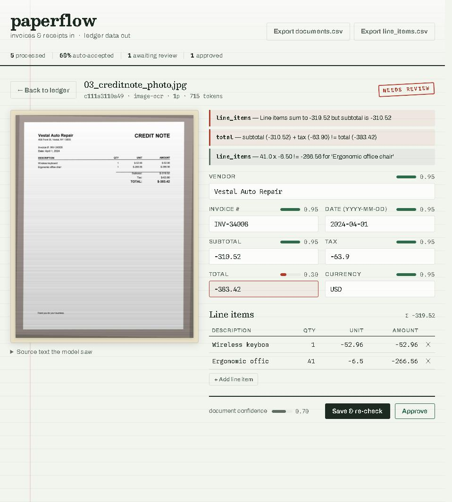

Invoices in. Verified ledger data out.
paperflow turns invoices and receipts into structured, checked data — and tells you exactly which ones a human still needs to look at.
Built on one idea: on a cheap, fallible model, the pipeline carries the reliability, not the model. It extracts the fields an accountant needs, checks them against the document's own arithmetic and its source text, scores its own confidence per field, and routes only the shaky ones to a fast human-review UI. Everything runs on free GLM flash-tier models through any OpenAI-compatible endpoint.
"Just use an LLM" gets you 90% — then quietly hurts you.
A bookkeeping team receives invoices as email PDFs, flatbed scans, and photos texted from a job site. Someone retypes each one. It's slow and the errors are expensive: a transposed total pays the wrong amount; a misread vendor pays the wrong company.
A flash model will confidently return a clean-looking JSON object with a wrong number in it, and nothing downstream knows. The hard part isn't extraction — it's knowing which extractions to trust. The design goal: auto-accept the documents the pipeline can verify, route the rest to a human, and measure honestly how often "auto-accept" is actually right.
One pipeline, from upload to ledger.
The same pipeline.process() runs for every upload and every eval fixture — so the eval measures exactly what production runs.
Ingest
Digital PDFs read their text layer; scans and photos are rendered and OCR'd (Tesseract, Otsu binarize).
Extract
An OpenAI-compatible / GLM flash call pulls fields and line items, with a brace-balanced JSON repair retry.
Normalize
Amounts, dates, and currency are resolved to canonical form — locale-aware, so 1.234,56 doesn't get divided by 1000.
Validate
Arithmetic reconciliation, required-field checks, ISO dates. A non-reconciling invoice is a warning, not a false error.
Score
Per-field confidence blends model self-report, source grounding, and arithmetic corroboration.
Auto-accept — no human needed. In the eval, 78% of documents land here at 98.1% field accuracy.
Human review queue — the document opens beside its fields with the low-confidence value and any arithmetic mismatch flagged for a fast fix.
A ledger you can trust at a glance, and a review view built for speed.


Honest, reproducible numbers — not a hand-picked demo.
Every number here came out of python -m evals.run over 118 deterministic synthetic fixtures: clean PDFs, scans, skewed phone photos, multi-page invoices, and deliberately nasty edge cases. Model: glm-4.5-flash (free tier), reasoning disabled.
| Category | n | Field accuracy | Fully correct | Auto-accept |
|---|---|---|---|---|
| clean_pdf | 30 | 100.0% | 30/30 | 100.0% |
| multipage | 12 | 100.0% | 12/12 | 100.0% |
| edge | 24 | 97.9% | 20/24 | 75.0% |
| scan | 28 | 94.9% | 13/28 | 71.4% |
| photo | 24 | 82.3% | 2/24 | 50.0% |
A flash model's self-confidence is a weak signal. So it's never trusted alone.
The failure that matters most is a model returning numbers that are internally consistent but absent from the document. The confidence score blends three signals to catch exactly that:
Model self-confidence
The model's own per-field certainty — used only as a weak prior, because these models are cheerfully overconfident.
Source grounding
Does the value actually appear in the document text? A total the model is sure of but that appears nowhere is capped low — this is what stops a confident hallucination from auto-accepting.
Arithmetic agreement
Line items reconciling to a subtotal/total is evidence the numbers agree with each other — but only boosts fields that are also grounded, and only for non-trivial reconciliations.
A document auto-accepts only when its weighted score clears the threshold, no validation error is present, and the required fields (vendor, date, total) are each present, grounded, and above a floor — so a high average from reconciling financials can't carry a wrong vendor over the line.
Clone it, drop in an invoice, watch it route.
Requires Python 3.11+ and (for scans/photos) Tesseract. Digital PDFs work without it.
# get the code git clone https://github.com/lordbasilaiassistant-sudo/paperflow.git cd paperflow python -m venv .venv && . .venv/bin/activate pip install -r requirements.txt cp .env.example .env # then add your key (any OpenAI-compatible endpoint) uvicorn app.main:app --reload # open http://127.0.0.1:8000 # see the eval pip install -r requirements-dev.txt python -m evals.generate # build the 118-fixture corpus python -m evals.run # run the pipeline and print the report
Want it live on the web instead of local? It ships a Dockerfile (Tesseract baked in) and a one-click Render blueprint — see the deploy guide. Note: the app has no auth, so put any public deployment behind access controls before running real documents through it.